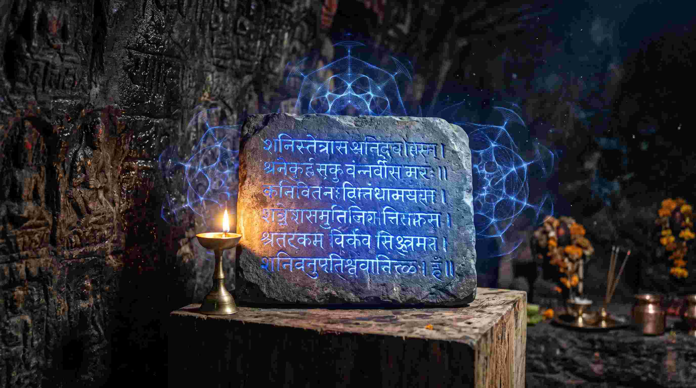

ज्योतिष की दुनिया में "शनि की साढ़ेसाती" (Sade Sati) और "ढैय्या" (Dhaiya) का नाम सुनते ही अच्छे-अच्छे लोगों के पसीने छूट जाते हैं। जब शनि अपना प्रभाव दिखाता है, तो रातों की नींद उड़ जाती है, हड्डियों में बिना कारण दर्द होने लगता है, व्यापार ठप्प हो जाता है और इंसान भयंकर डिप्रेशन (Clinical Depression) में चला जाता है। [cite: 4]
एक मेडिकल स्टूडेंट और ज्योतिषी के नजरिए से, मैं शनि (Saturn) को केवल एक 'क्रूर ग्रह' नहीं, बल्कि शरीर के कंकाल तंत्र (Skeletal System), मेलाटोनिन (Melatonin - स्लीप हार्मोन) और क्रोनिक स्ट्रेस (Chronic Stress) का मास्टर नियंत्रक मानता हूँ। जब आपको शनि परेशान कर रहा हो, तो कोई भी महंगी पूजा या नीलम रत्न काम नहीं आता। ऐसे समय में केवल एक ही अमोघ अस्त्र है— दशरथ कृत शनि स्तोत्र (Dasharath Krit Shani Stotra)। [cite: 4]
"शनि कोई दंड देने वाला देवता नहीं है; वह कर्मों का 'ऑडिटर' (Auditor) है। जब आप राजा दशरथ द्वारा रचित इस ध्वन्यात्मक (Acoustic) स्तोत्र का पाठ करते हैं, तो आप शनि के सामने अपनी हार (Surrender) स्वीकार करते हैं, और तभी से आपके न्यूरोलॉजिकल सिस्टम में हीलिंग शुरू होती है।"
1. राजा दशरथ और शनि देव की ऐतिहासिक कथा
पद्म पुराण में एक अत्यंत रहस्यमयी कथा है। त्रेता युग में, ज्योतिषियों ने इक्ष्वाकु वंश के चक्रवर्ती सम्राट राजा दशरथ को बताया कि शनि देव 'रोहिणी नक्षत्र' का भेदन करने वाले हैं (जिसे रोहिणी शकट भेदन कहा जाता है)। यदि शनि ऐसा करते, तो पृथ्वी पर लगातार 12 वर्षों तक भयंकर सूखा (Famine) पड़ता और करोड़ों लोग भूख से मर जाते।
अपनी प्रजा को बचाने के लिए, राजा दशरथ अपने दिव्य रथ पर सवार होकर सीधे अंतरिक्ष में शनि देव के सामने जा पहुंचे और उन्हें चुनौती दी। शनि देव, राजा दशरथ के इस असीम साहस और अपनी प्रजा के प्रति निस्वार्थ प्रेम को देखकर अत्यंत प्रसन्न हुए। तब राजा दशरथ ने शनि देव का क्रोध शांत करने के लिए जिस दिव्य स्तोत्र की रचना की, उसे ही "दशरथ कृत शनि स्तोत्र" कहा जाता है। [cite: 4]
2. शनि का मेडिकल और मनोवैज्ञानिक विज्ञान
मेडिकल एस्ट्रोलॉजी में, शनि सबसे धीमी गति से चलने वाला और सबसे ठंडा ग्रह है। शरीर में यह उन बीमारियों का कारक है जो धीरे-धीरे बढ़ती हैं और लंबे समय तक ठीक नहीं होतीं (Chronic Illnesses)।
- हड्डियां और दांत (Bones & Teeth): शनि आपके कंकाल तंत्र और जोड़ों के दर्द (Arthritis/Osteoporosis) का कारक है।
- स्लीप साइकिल और डिप्रेशन: शनि सीधे आपके पीनियल ग्लैंड (Pineal Gland) और मेलाटोनिन (Melatonin) उत्पादन को रोकता है, जिससे साढ़ेसाती में व्यक्ति को भयानक अनिद्रा (Insomnia) और एकांत (Isolation) का सामना करना पड़ता है।
- कॉर्टिसोल (Stress Hormone): साढ़ेसाती व्यक्ति को मानसिक रूप से निचोड़ देती है।
इस स्तोत्र में प्रयुक्त विशेष 'अनुष्टुप छन्द' और कठोर व्यंजनों (Heavy Consonants) का कंपन सीधे आपके बेसल गैन्ग्लिया (Basal Ganglia) को शांत करता है और मस्तिष्क को यह संकेत देता है कि "डरने की कोई बात नहीं है।"

3. दशरथ कृत शनि स्तोत्र: सम्पूर्ण 10 श्लोक और उनका गहरा अर्थ
यहाँ राजा दशरथ द्वारा रचित इस चमत्कारी स्तोत्र का मूल संस्कृत पाठ, उसका भावार्थ और उसका वैज्ञानिक प्रभाव दिया जा रहा है: [cite: 4]
नम: कृष्णाय नीलाय शितिकण्ठनिभाय च।
नम: कालाग्निरूपाय कृतान्ताय च वै नम:॥ १ ॥
अर्थ: जिनके शरीर का वर्ण कृष्ण (काला) और नीला है, जिनकी आभा भगवान शिव (नीलकंठ) के समान है, जो प्रलयकाल की अग्नि (कालाग्नि) के समान भयंकर हैं और जो यमराज के समान हैं—उन शनि देव को मेरा नमस्कार है। [cite: 4]
विज्ञान: यह श्लोक शनि की डार्क एनर्जी (Dark Matter/Gravity) को स्वीकार करने का 'ग्राउंडिंग' (Grounding) मंत्र है।
नमो निर्मांसदेहाय दीर्घश्मश्रुजटाय च।
नमो विशालनेत्राय शुष्कोदर भयाकृते॥ २ ॥
अर्थ: जिनका शरीर मांसहीन (सूखा हुआ कंकाल) है, जिनकी लंबी दाढ़ी और जटाएं हैं, जिनके नेत्र विशाल हैं और जिनका पेट सूखा हुआ और आकृति भयानक है—उन्हें नमस्कार है। [cite: 4]
नम: पुष्कलगात्राय स्थूलरोम्णे च वै नम:।
नमो दीर्घाय शुष्काय कालदंष्ट्र नमोऽस्तु ते॥ ३ ॥
अर्थ: जिनके शरीर की हड्डियां और रोएं (बाल) स्थूल (मोटे) हैं, जो आकार में लंबे और सूखे हुए हैं, और जिनकी दाढ़ें काल (मृत्यु) के समान भयानक हैं, हे शनि देव! आपको मेरा नमस्कार है। [cite: 4]
नमस्ते कोटराक्षाय दुर्नरीक्ष्याय वै नम:।
नमो घोराय रौद्राय भीषणाय कपालिने॥ ४ ॥
अर्थ: जिनकी आंखें गहरे गड्ढों में धंसी हुई हैं, जिनकी ओर देखना अत्यंत कठिन (दुर्नरीक्ष्य) है, जो अत्यंत घोर, रौद्र, भीषण और कपाल धारण करने वाले हैं—उन्हें मैं नमस्कार करता हूँ। [cite: 4]
विज्ञान: शनि के इस भयानक स्वरूप का ध्यान करने से व्यक्ति के भीतर छिपे हुए सबसे गहरे मनोवैज्ञानिक डर (Deep-seated Phobias) सतह पर आकर खत्म हो जाते हैं।
नमस्ते सर्वभक्षाय बलीमुख नमोऽस्तु ते।
सूर्यपुत्र नमस्तेऽस्तु भास्करेऽभयदाय च॥ ५ ॥
अर्थ: जो सब कुछ भक्षण कर जाने वाले (सर्वभक्षी) हैं, जिनका मुख वानर (बलीमुख) के समान है, हे सूर्यपुत्र! हे सूर्य को भी भय देने वाले! मैं आपको नमस्कार करता हूँ। [cite: 4]
अधोदृष्टे: नमस्तेऽस्तु संवर्तक नमोऽस्तु ते।
नमो मन्दगते तुभ्यं निस्त्रिंशाय नमोऽस्तु ते॥ ६ ॥
अर्थ: जिनकी दृष्टि हमेशा नीचे (अधोदृष्टि) रहती है, जो संवर्तक (प्रलय करने वाले) हैं, जिनकी गति बहुत धीमी (मंद) है, और जो निष्ठुर (बिना दया के न्याय करने वाले) हैं—आपको नमस्कार है। [cite: 4]
तपसा दग्धदेहाय नित्यं योगरताय च।
नमो नित्यं क्षुधार्ताय अतृप्ताय च वै नम:॥ ७ ॥
अर्थ: जिनका शरीर कठोर तपस्या के कारण जलकर काला हो गया है, जो हमेशा योग-साधना में लीन रहते हैं, जो हमेशा भूख से पीड़ित और अतृप्त रहते हैं—उन्हें मेरा नमस्कार है। [cite: 4]
ज्ञानचक्षु नमस्तेऽस्तु कश्यपात्मज सूनवे।
तुष्टो ददासि वै राज्यं रुष्टो हरसि तत्क्षणात्॥ ८ ॥
अर्थ: हे ज्ञानचक्षु (ज्ञान रूपी नेत्रों वाले)! हे कश्यप-नंदन सूर्य के पुत्र! आपको नमस्कार है। आप प्रसन्न होने पर रंक को राजा बना देते हैं, और क्रोधित होने पर राजा का राज्य क्षण भर में छीन लेते हैं। [cite: 4]
विज्ञान: यह श्लोक पूर्ण 'समर्पण' (Absolute Surrender) का प्रतीक है। जब 'ईगो' (अहंकार) खत्म होता है, तो मस्तिष्क में सेरोटोनिन रिलीज होता है, जिससे डिप्रेशन खत्म हो जाता है।
देवासुरमनुष्याश्च सिद्धविद्याधरोरगा:।
त्वया विलोकिता: सर्वे नाशं यान्ति समूलत:॥ ९ ॥
अर्थ: देवता, असुर, मनुष्य, सिद्ध, विद्याधर और नाग—आपकी (वक्र) दृष्टि जिस पर भी पड़ जाती है, वे जड़ (समूल) सहित नष्ट हो जाते हैं। [cite: 4]
प्रसादं कुरु मे देव वराहोऽहमुपागत:।
एवं स्तुतस्तदा सौरिर्ग्रहराजो महाबल:॥ १० ॥
अर्थ: हे देव! मैं आपके सामने वरदान मांगने आया हूँ, मुझ पर कृपा करें (प्रसादं कुरु)। इस प्रकार राजा दशरथ द्वारा स्तुति किए जाने पर, ग्रहों के राजा महाबली सूर्यपुत्र शनि देव अत्यंत प्रसन्न हुए। [cite: 4]
4. साढ़ेसाती और ढैय्या के लिए 43-दिन का अमोघ अनुष्ठान
यदि आप कर्ज (Debt), नौकरी छूटने, झूठे आरोपों (False allegations) या किसी ऐसी बीमारी से परेशान हैं जो डायग्नोस (Diagnose) नहीं हो पा रही है, तो इस वैज्ञानिक और वैदिक अनुष्ठान को आज़माएँ: [cite: 4]
- आरंभ (Start): किसी भी शनिवार (Saturday) को सूर्यास्त के बाद (Twilight / गोधूलि वेला) इस अनुष्ठान को शुरू करें। शनि अंधेरे और एकांत का ग्रह है।
- दीपक (Lamp): एक लोहे की कटोरी या मिट्टी के दीये में सरसों का तेल (Mustard Oil) डालें। उसमें थोड़े काले तिल (Black sesame seeds) डालें और पश्चिम (West) दिशा की ओर मुख करके जलाएं। तिल और सरसों का तेल शनि की कॉस्मिक फ्रीक्वेंसी को बहुत तेजी से आकर्षित (Conduct) करते हैं।
- पाठ की विधि: दशरथ कृत शनि स्तोत्र का अत्यंत धीमी गति से (जैसे शनि की चाल मंद होती है) 1 बार या 3 बार पाठ करें। [cite: 4]
- शारीरिक श्रम (Physical Labour): शनि को पसीना (Sweat) और मेहनत पसंद है। यदि आप साढ़ेसाती में हैं, तो जिम जाएं, भारी वजन उठाएं, या पैदल चलें। जब आपकी हड्डियों और मांसपेशियों पर जोर पड़ेगा, तो शनि का नकारात्मक प्रभाव स्वतः 'पसीने' के जरिए कट जाएगा।
- दान (Charity): शनि न्याय का देवता है। शनिवार को अंधे, अपाहिज या सफाई-कर्मचारियों (Sanitation workers) को काले जूते, छाता या भोजन दान करें।
निष्कर्ष: शनि कोई विलेन नहीं, आपका सबसे बड़ा 'गुरू' है
शनि ग्रह एक सख्त 'हेडमास्टर' (Headmaster) की तरह है। जब आप अपनी जन्म कुंडली (Kundali) के अनुसार सही रास्ते (Dharma) से भटक जाते हैं, बेईमानी करते हैं, या अपने शरीर और समय को बर्बाद करते हैं, तब शनि की साढ़ेसाती आपको रास्ते पर लाने के लिए 'डंडा' मारती है। [cite: 4]
दशरथ कृत शनि स्तोत्र उसी डंडे की मार से बचने का एक 'क्षमा-याचना' (Apology) फॉर्म है। जब आप राजा दशरथ की तरह अहंकार (Ego) छोड़कर शनि देव की शरण में जाते हैं, तो वह आपको केवल माफ ही नहीं करते, बल्कि आपको इतना मानसिक बल (Mental Strength) और सफलता देते हैं, जो कोई दूसरा ग्रह आपको जीवन में कभी नहीं दे सकता! [cite: 4]